Créditos das fotos
As fotos das categorias são do Wikimedia Commons e têm licença livre (Creative Commons). Agradecemos aos fotógrafos. As demais imagens do site são geradas, sem equipe ou marca real.
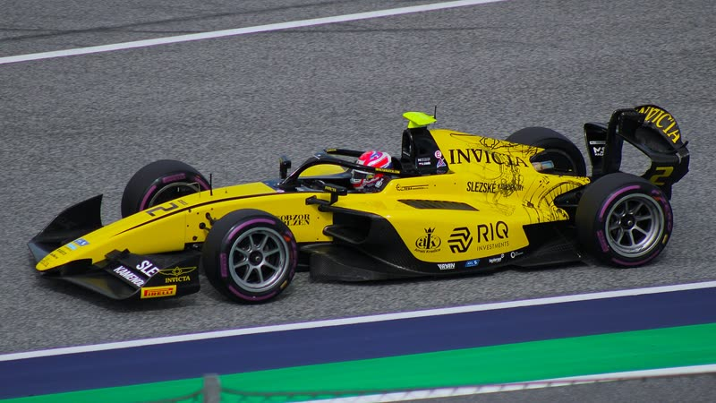
Fórmula 2Foto: Lukas Raich · CC BY-SA 4.0 · ver no Wikimedia CommonsFIA F2 Austria 2025 Nr. 2 Staněk.jpg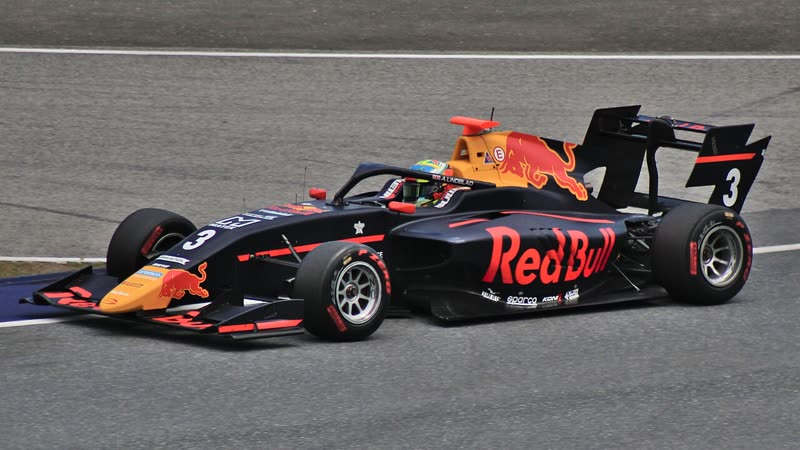
Fórmula 3Foto: Lukas Raich · CC BY-SA 4.0 · ver no Wikimedia CommonsFIA F3 Austria 2024 Nr. 3 Lindblad.jpg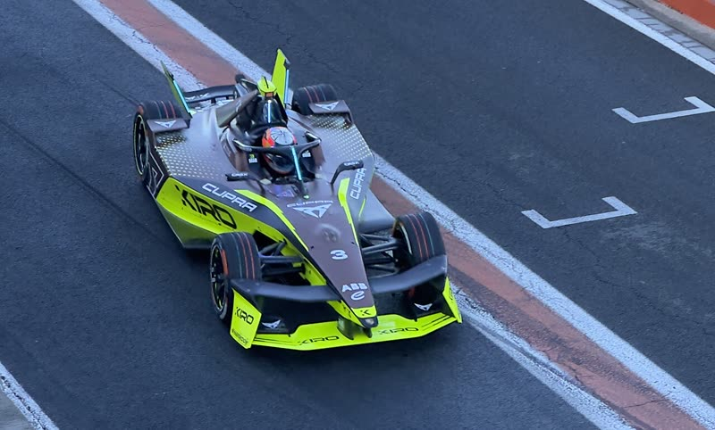
Fórmula EFoto: Byxelized · CC BY-SA 4.0 · ver no Wikimedia CommonsPepe Martí Valencia Formula E Test 2025.jpg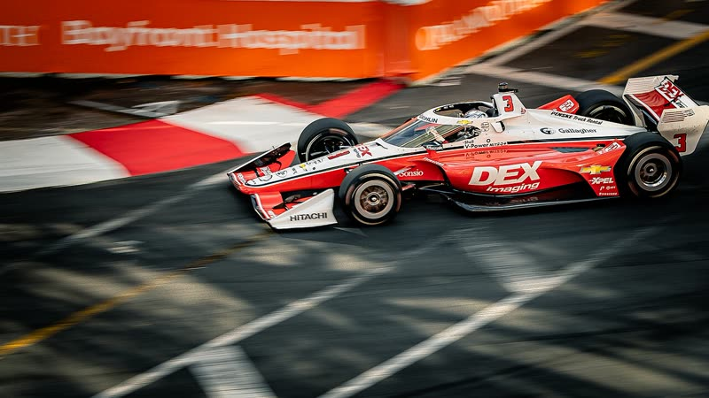
IndyCarFoto: Bill Brine · CC BY 2.0 · ver no Wikimedia Commons2024 Grand Prix of St Petersburg Grand (53584098374).jpg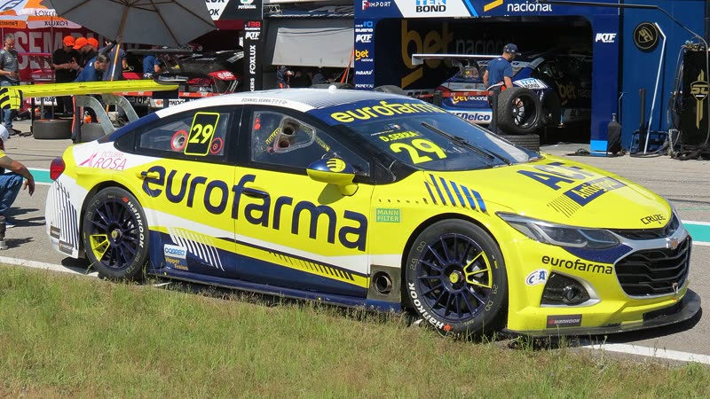
Stock CarFoto: NaBUru38 · CC BY-SA 4.0 · ver no Wikimedia Commons2024 Stock Car Pro Series at El Pinar - Pitlane 17.jpg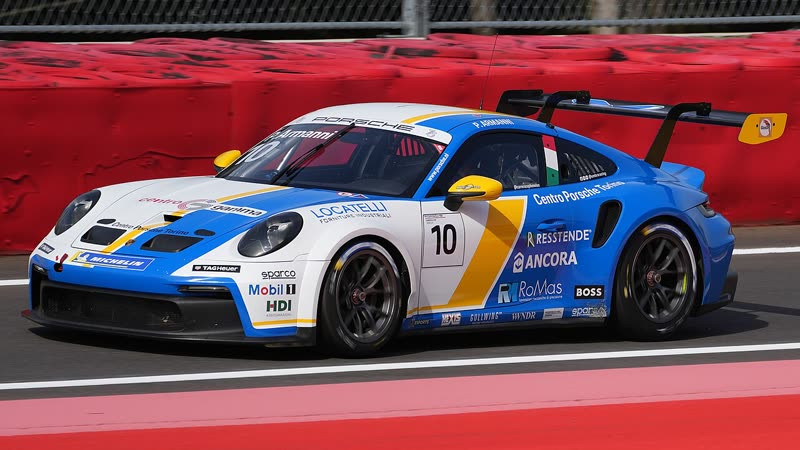
Porsche CupFoto: MarcelX42 · CC BY-SA 4.0 · ver no Wikimedia CommonsPorsche Carrera Cup Benelux 2023 Spa-Francorchamps Ombra Racing Porsche 911 GT3 Cup (992) No.10 Pietro Armanni (DSC06969).jpg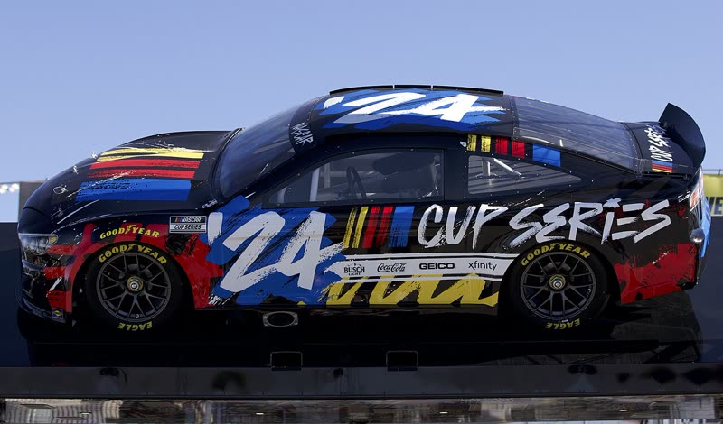
NASCARFoto: TaurusEmerald · CC BY-SA 4.0 · ver no Wikimedia CommonsNASCAR Cup Series 24 Next Gen Showcar.jpg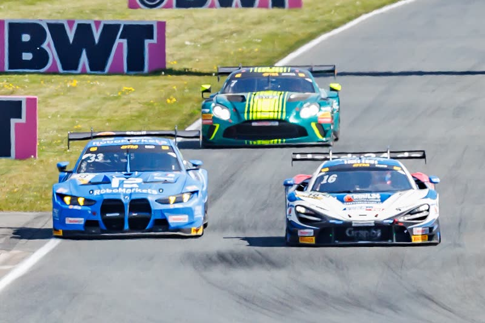
DTMFoto: Steffen Prößdorf · CC BY-SA 4.0 · ver no Wikimedia Commons2025-04-26 Motorsport, DTM, Oschersleben STP 3084.jpg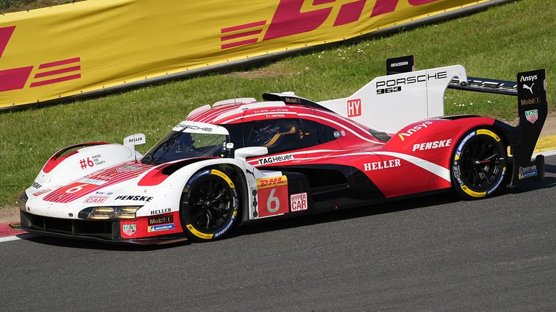
EnduranceFoto: MarcelX42 · CC BY-SA 4.0 · ver no Wikimedia Commons2024 6 Hours of Spa-Francorchamps Porsche Penske Motorsport Porsche 963 No.6 (DSC06324).jpg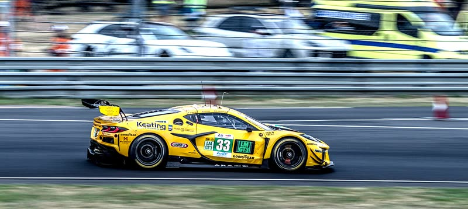
Le MansFoto: Mickael Le rouzic · CC BY 4.0 · ver no Wikimedia Commons2025 24 Hours of Le Mans (54917513578).jpg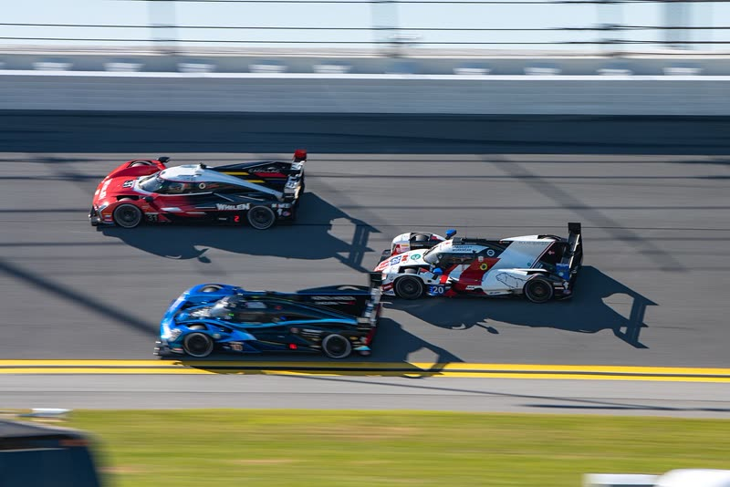
IMSAFoto: Osajus Photography from Asheville, NC, United States · CC BY 2.0 · ver no Wikimedia CommonsDSC0782 (52679523460).jpg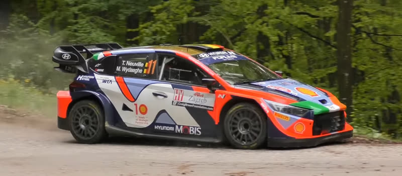
RallyFoto: komiknm komik video · CC BY 3.0 · ver no Wikimedia CommonsThierry Neuville - Rajd Chorwacji 2024.png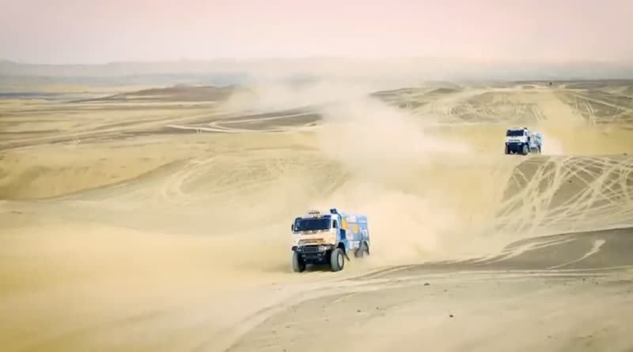
Rally DakarFoto: Global IPCS · CC BY 3.0 · ver no Wikimedia CommonsGlobal IPCS (Camiones) - Dakar 2018 - Perú - Kamaz.jpg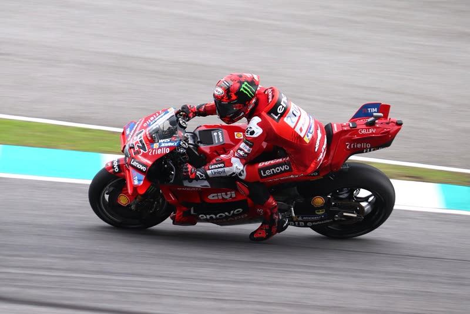
MotoGPFoto: Liauzh · CC BY-SA 4.0 · ver no Wikimedia CommonsMotoGP 2025 Malaysian Grand Prix - Ducati Lenovo - Francesco Bagnaia.jpg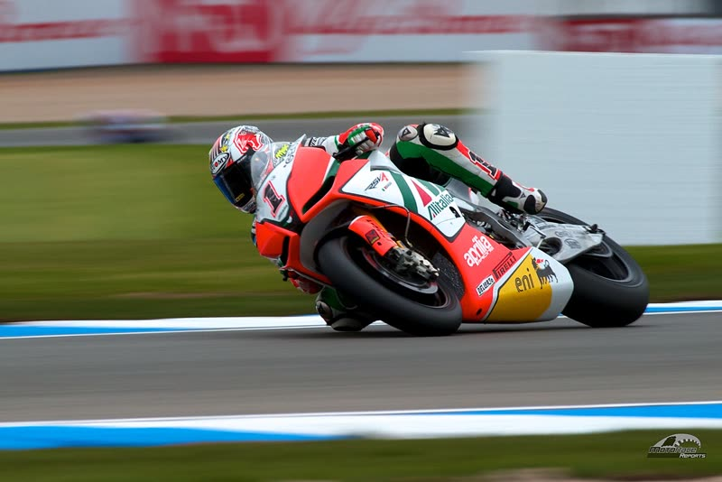
SuperbikeFoto: Jared Earle/MotoRaceReports · CC BY 3.0 · ver no Wikimedia CommonsMax Biaggi 2011 SBK Donington.jpg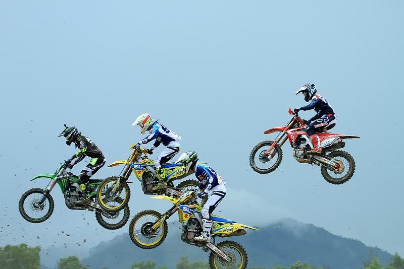
MotocrossFoto: Domiyanto1977 · CC BY-SA 4.0 · ver no Wikimedia CommonsKompetisi Motocross MXGP di Pangkal Pinang Indonesia.jpg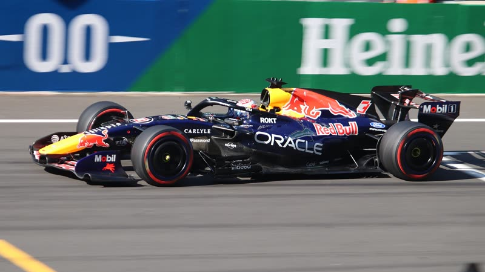
Fórmula 1Foto: Liauzh · CC BY 4.0 · ver no Wikimedia Commons2026 Chinese GP - Red Bull - Max Verstappen - Qualifying.jpg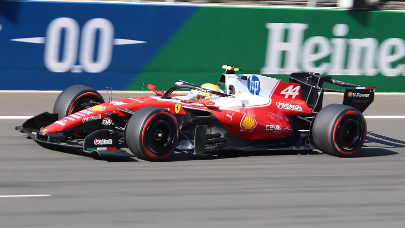
Fórmula 1Foto: Liauzh · CC BY 4.0 · ver no Wikimedia Commons2026 Chinese GP - Ferrari - Lewis Hamilton - Qualifying.jpg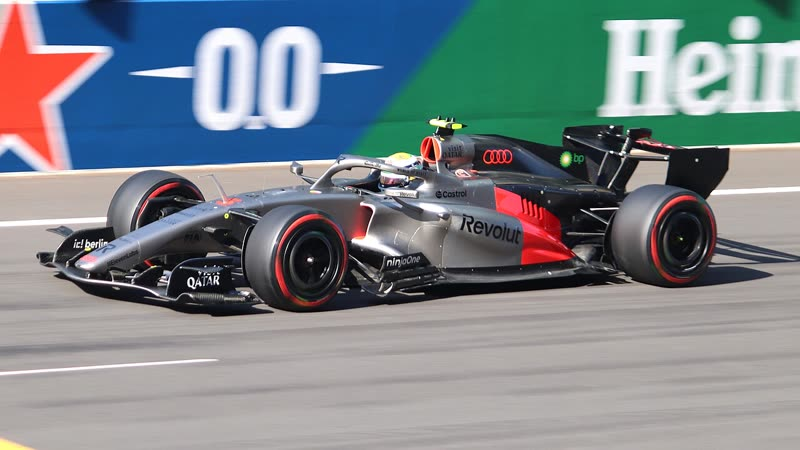
Fórmula 1Foto: Liauzh · CC BY 4.0 · ver no Wikimedia Commons2026 Chinese GP - Audi - Gabriel Bortoleto - Qualifying.jpg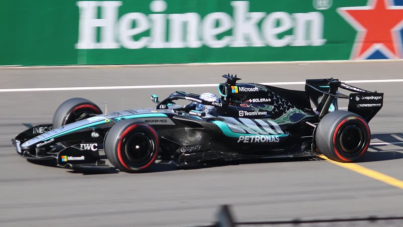
Fórmula 1Foto: Liauzh · CC BY 4.0 · ver no Wikimedia Commons2026 Chinese GP - Mercedes - George Russell - Qualifying.jpg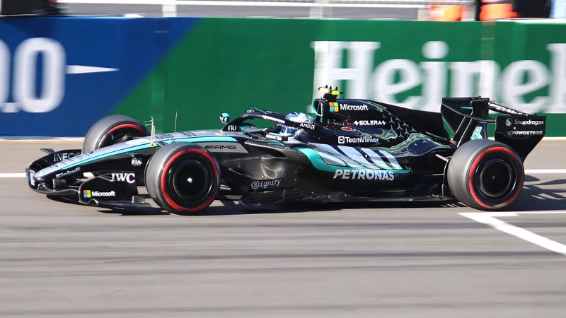
Fórmula 1Foto: Liauzh · CC BY 4.0 · ver no Wikimedia Commons2026 Chinese GP - Mercedes - Kimi Antonelli - Qualifying.jpg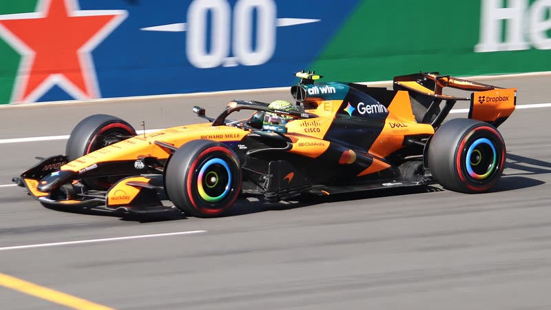
Fórmula 1Foto: Liauzh · CC BY 4.0 · ver no Wikimedia Commons2026 Chinese GP - McLaren - Lando Norris - Qualifying.jpg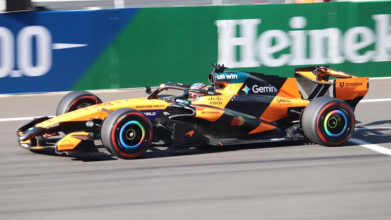
Fórmula 1Foto: Liauzh · CC BY 4.0 · ver no Wikimedia Commons2026 Chinese GP - McLaren - Oscar Piastri - Qualifying.jpg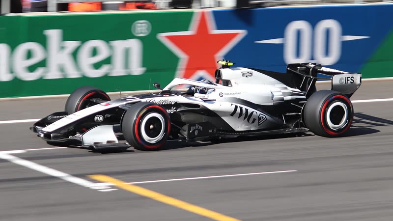
Fórmula 1Foto: Liauzh · CC BY 4.0 · ver no Wikimedia Commons2026 Chinese GP - Cadillac - Valtteri Bottas - Qualifying.jpg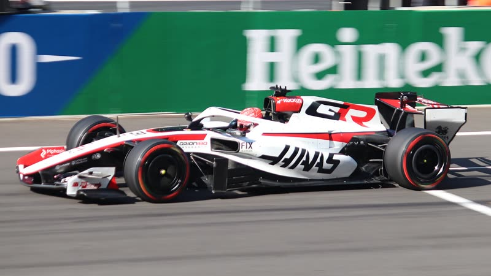
Fórmula 1Foto: Liauzh · CC BY 4.0 · ver no Wikimedia Commons2026 Chinese GP - Haas - Esteban Ocon - Qualifying.jpg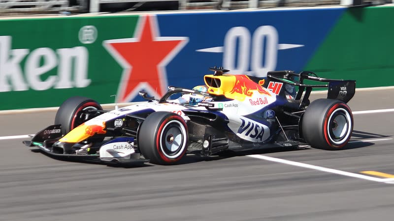
Fórmula 1Foto: Liauzh · CC BY 4.0 · ver no Wikimedia Commons2026 Chinese GP - Racing Bulls - Arvid Lindblad - Qualifying.jpg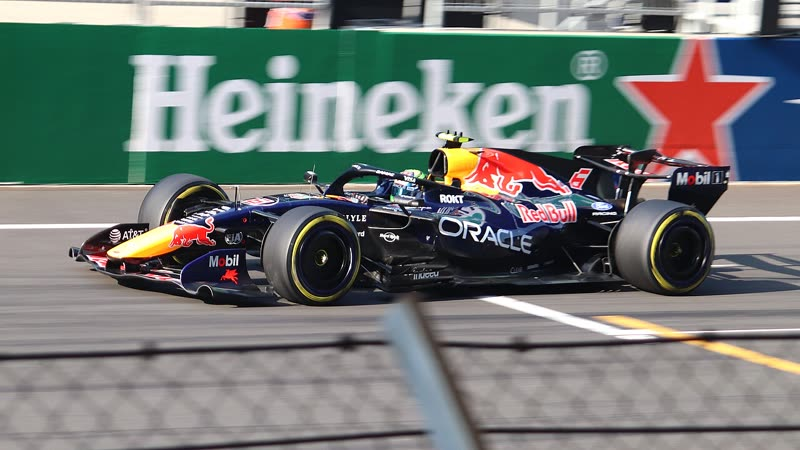
Fórmula 1Foto: Liauzh · CC BY 4.0 · ver no Wikimedia Commons2026 Chinese GP - Red Bull - Isack Hadjar - Sprint Qualifying.jpg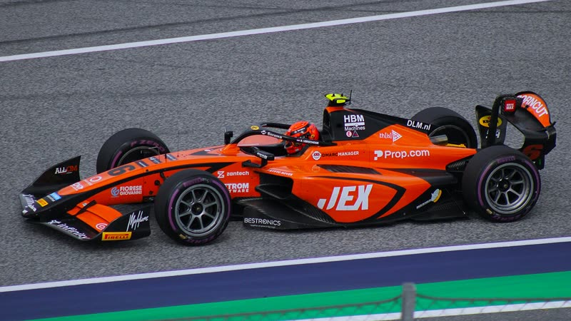
Fórmula 2Foto: Lukas Raich · CC BY-SA 4.0 · ver no Wikimedia CommonsFIA F2 Austria 2025 Nr. 6 Verschoor.jpg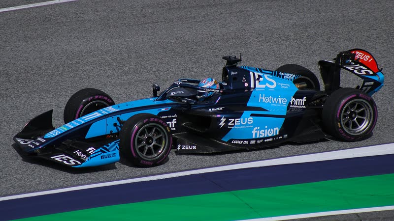
Fórmula 2Foto: Lukas Raich · CC BY-SA 4.0 · ver no Wikimedia CommonsFIA F2 Austria 2025 Nr. 11 Crawford.jpg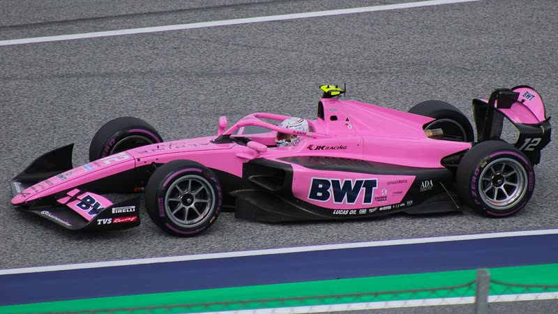
Fórmula 2Foto: Lukas Raich · CC BY-SA 4.0 · ver no Wikimedia CommonsFIA F2 Austria 2025 Nr. 12 Maini.jpg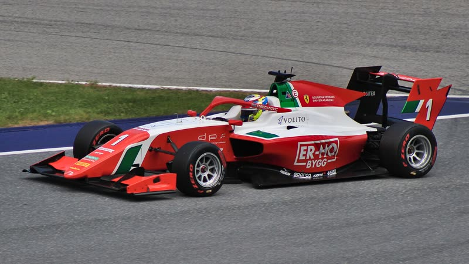
Fórmula 3Foto: Lukas Raich · CC BY-SA 4.0 · ver no Wikimedia CommonsFIA F3 Austria 2024 Nr. 1 Beganovic.jpg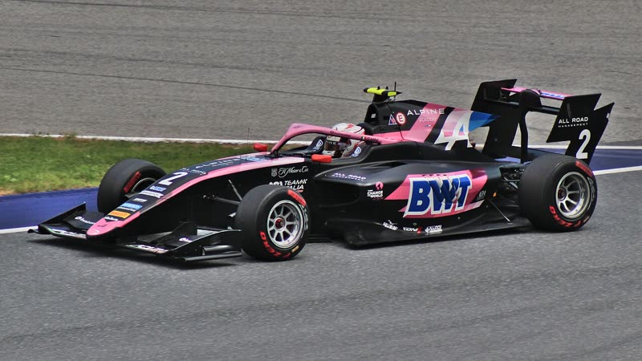
Fórmula 3Foto: Lukas Raich · CC BY-SA 4.0 · ver no Wikimedia CommonsFIA F3 Austria 2024 Nr. 2 Mini.jpg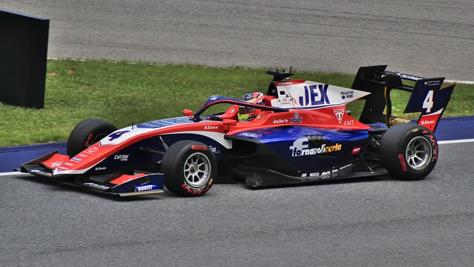
Fórmula 3Foto: Lukas Raich · CC BY-SA 4.0 · ver no Wikimedia CommonsFIA F3 Austria 2024 Nr. 4 Fornaroli.jpg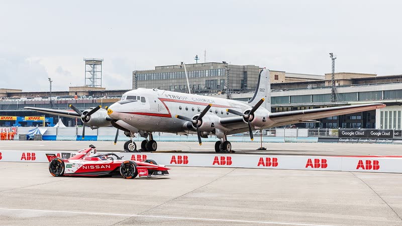
Fórmula EFoto: Steffen Prößdorf · CC BY-SA 4.0 · ver no Wikimedia Commons2025-07-11 Motorsport, ABB FIA Formula E World Championship, Berlin E-Prix 2025 STP 0075.jpg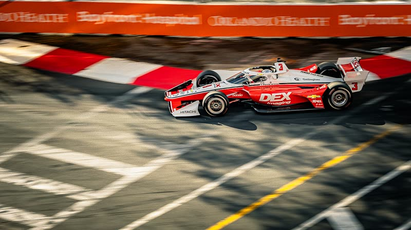
IndyCarFoto: Bill Brine · CC BY 2.0 · ver no Wikimedia Commons2024 Grand Prix of St Petersburg Grand (53583774396).jpg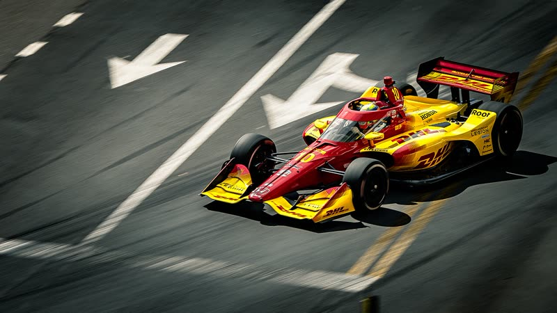
IndyCarFoto: Bill Brine · CC BY 2.0 · ver no Wikimedia Commons2024 Grand Prix of St Petersburg Grand (53584100724).jpg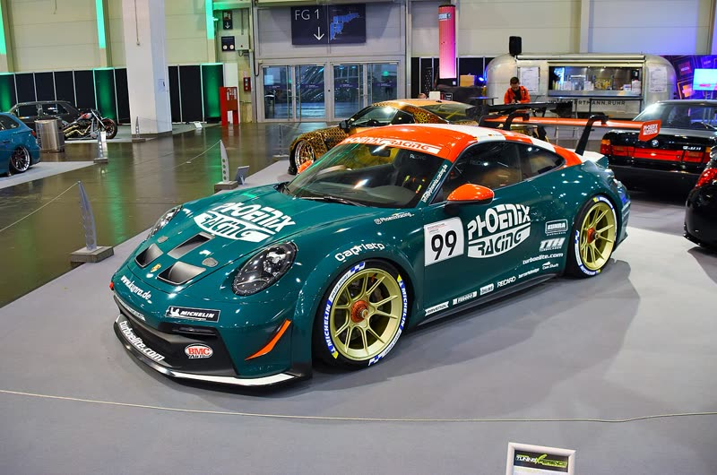
Porsche CupFoto: Charles from Port Chester, New York · CC BY 2.0 · ver no Wikimedia CommonsPorsche 911 GT3 (992, 2022) (52573993502).jpg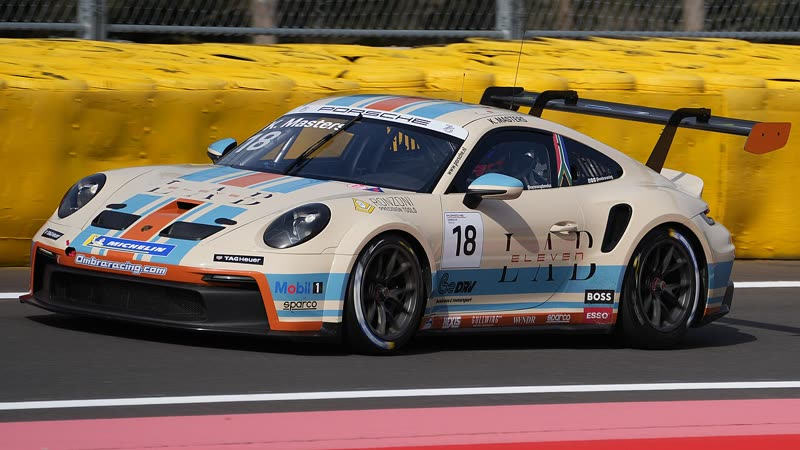
Porsche CupFoto: MarcelX42 · CC BY-SA 4.0 · ver no Wikimedia CommonsPorsche Carrera Cup Benelux 2023 Spa-Francorchamps Ombra Racing Porsche 911 GT3 Cup (992) No.18 Keagan Masters (DSC06980).jpg Porsche CupFoto: MarcelX42 · CC BY-SA 4.0 · ver no Wikimedia CommonsPorsche Carrera Cup Benelux 2023 Spa-Francorchamps Revs Motorsport Porsche 911 GT3 Cup (992) No.8 Aaron Mason (DSC07232).jpg
Porsche CupFoto: MarcelX42 · CC BY-SA 4.0 · ver no Wikimedia CommonsPorsche Carrera Cup Benelux 2023 Spa-Francorchamps Revs Motorsport Porsche 911 GT3 Cup (992) No.8 Aaron Mason (DSC07232).jpg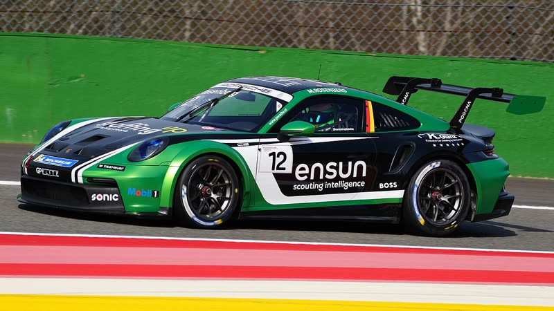
Porsche CupFoto: MarcelX42 · CC BY-SA 4.0 · ver no Wikimedia CommonsPorsche Carrera Cup Benelux 2023 Spa-Francorchamps Team GP Elite Porsche 911 GT3 Cup (992) No.12 Maik Rosenberg (DSC07095).jpg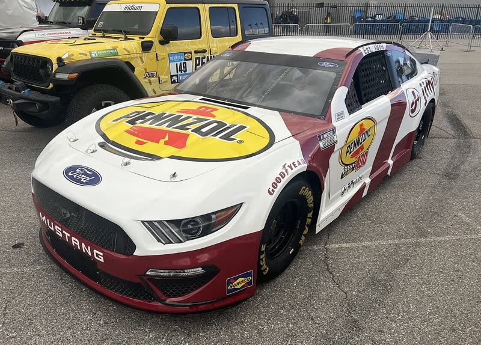
NASCARFoto: TaurusEmerald · CC BY-SA 4.0 · ver no Wikimedia CommonsJiffy Lube Pennzoil Ford Mustang NASCAR Showcar.jpg NASCARFoto: Calreyn88 · CC BY-SA 4.0 · ver no Wikimedia Commons2007 Dodge Avenger NASCAR.jpg
NASCARFoto: Calreyn88 · CC BY-SA 4.0 · ver no Wikimedia Commons2007 Dodge Avenger NASCAR.jpg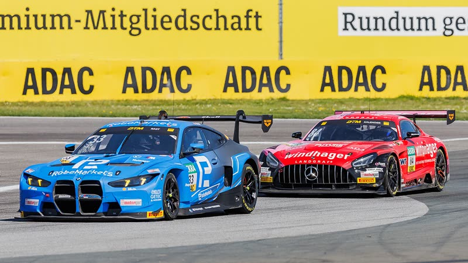
DTMFoto: Steffen Prößdorf · CC BY-SA 4.0 · ver no Wikimedia Commons2025-04-26 Motorsport, DTM, Oschersleben STP 3060.jpg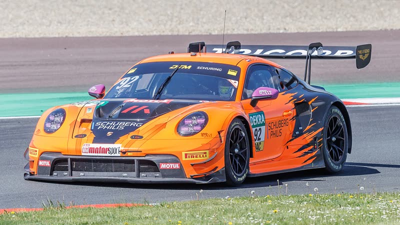
DTMFoto: Steffen Prößdorf · CC BY-SA 4.0 · ver no Wikimedia Commons2025-04-26 Motorsport, DTM, Oschersleben STP 3076.jpg DTMFoto: Steffen Prößdorf · CC BY-SA 4.0 · ver no Wikimedia Commons2025-04-26 Motorsport, DTM, Oschersleben STP 3088.jpg
DTMFoto: Steffen Prößdorf · CC BY-SA 4.0 · ver no Wikimedia Commons2025-04-26 Motorsport, DTM, Oschersleben STP 3088.jpg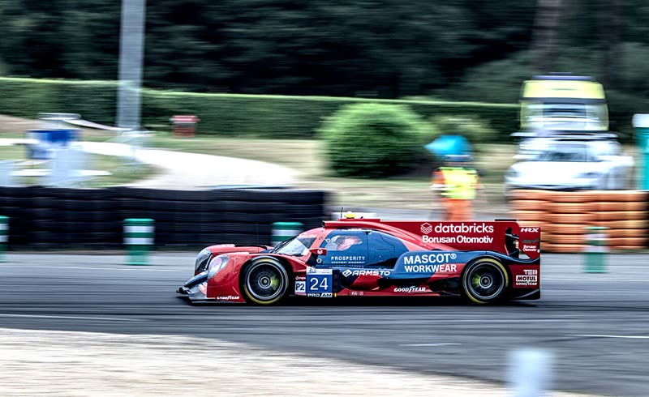
EnduranceFoto: Mickael Le rouzic · CC BY 4.0 · ver no Wikimedia Commons2025 24 Hours of Le Mans (54916433957).jpg EnduranceFoto: Mickael Le rouzic · CC BY 4.0 · ver no Wikimedia Commons2025 24 Hours of Le Mans (54917597525).jpg
EnduranceFoto: Mickael Le rouzic · CC BY 4.0 · ver no Wikimedia Commons2025 24 Hours of Le Mans (54917597525).jpg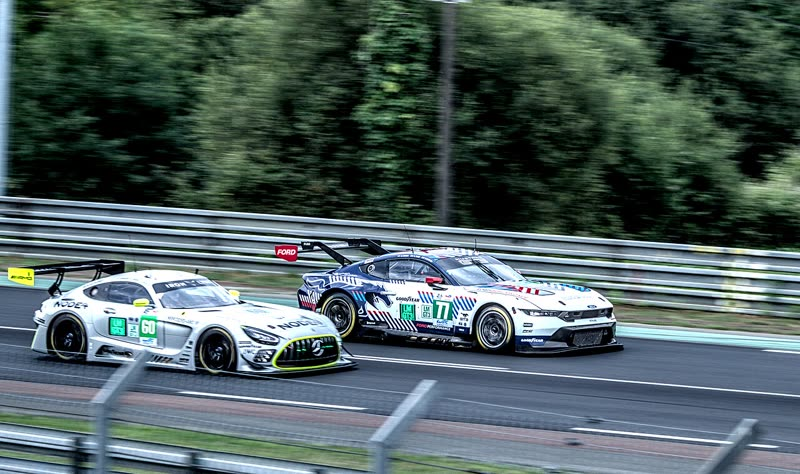
Le MansFoto: Mickael Le rouzic · CC BY 4.0 · ver no Wikimedia Commons2025 24 Hours of Le Mans (54917297041).jpg Le MansFoto: Mickael Le rouzic · CC BY 4.0 · ver no Wikimedia Commons2025 24 Hours of Le Mans (54917547789).jpg
Le MansFoto: Mickael Le rouzic · CC BY 4.0 · ver no Wikimedia Commons2025 24 Hours of Le Mans (54917547789).jpg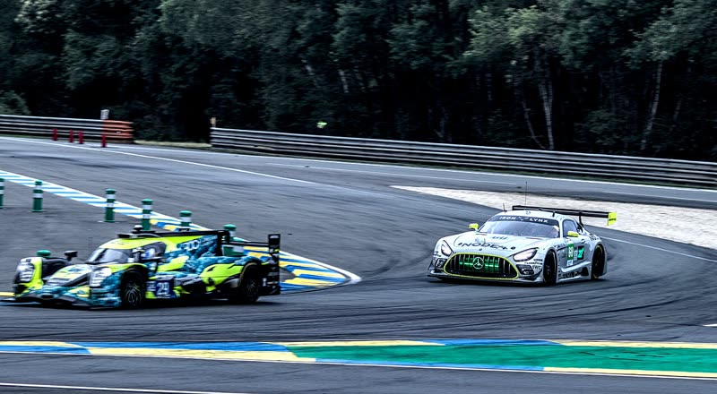
Le MansFoto: Mickael Le rouzic · CC BY 4.0 · ver no Wikimedia Commons2025 24 Hours of Le Mans (54917295581).jpg IMSAFoto: Chris Pruitt · CC BY-SA 3.0 · ver no Wikimedia CommonsPLM12 Turn 1 action.jpg
IMSAFoto: Chris Pruitt · CC BY-SA 3.0 · ver no Wikimedia CommonsPLM12 Turn 1 action.jpg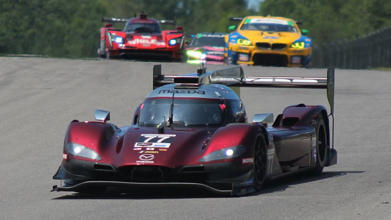
IMSAFoto: TorontoGuy79 · CC BY-SA 4.0 · ver no Wikimedia CommonsMazda Team Joest Mazda RT24-P - Winner 2019 SportsCar Grand Prix.jpg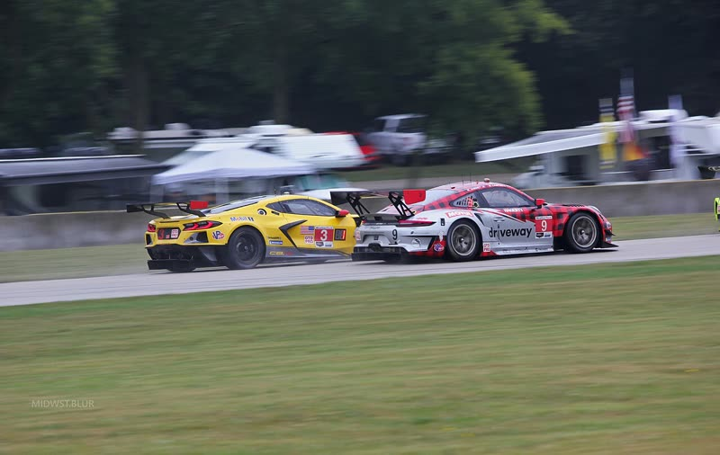
IMSAFoto: MIDWST.BLUR · CC BY 2.0 · ver no Wikimedia CommonsWet Pass (52571942281).jpg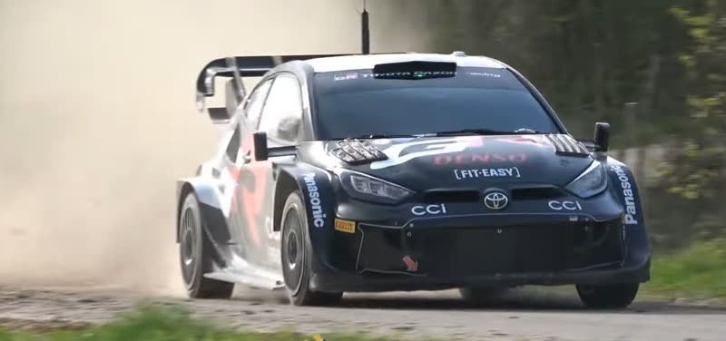
RallyFoto: komiknm komik video · CC BY 3.0 · ver no Wikimedia CommonsOgier Rajd Chorwacji 20224.png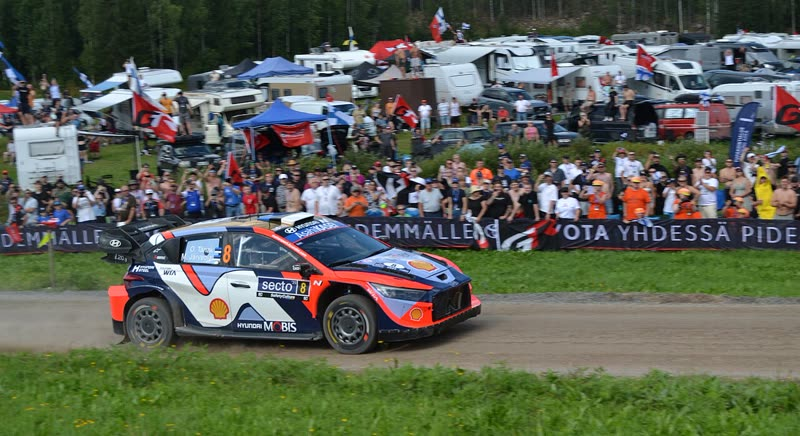
RallyFoto: Antti Leppänen · CC BY 4.0 · ver no Wikimedia CommonsOtt Tänak Rally Finland 2025 Ouninpohja.jpg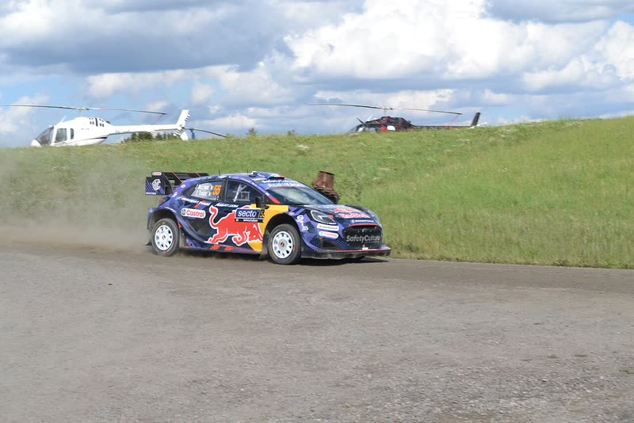
RallyFoto: Antti Leppänen · CC BY 4.0 · ver no Wikimedia CommonsJosh McErlean Rally Finland 2025 Ouninpohja.jpg- MotoGPFoto: Liauzh · CC BY-SA 4.0 · ver no Wikimedia CommonsMotoGP 2025 Malaysian Grand Prix - Ducati Lenovo - Michele Pirro.jpg
- MotoGPFoto: Liauzh · CC BY-SA 4.0 · ver no Wikimedia CommonsMotoGP 2025 Malaysian Grand Prix - VR46 Racing Team - Fabio Di Giannantonio.jpg
 MotoGPFoto: Liauzh · CC BY-SA 4.0 · ver no Wikimedia CommonsMotoGP 2025 Malaysian Grand Prix - VR46 Racing Team - Franco Morbidelli.jpg
MotoGPFoto: Liauzh · CC BY-SA 4.0 · ver no Wikimedia CommonsMotoGP 2025 Malaysian Grand Prix - VR46 Racing Team - Franco Morbidelli.jpg- SuperbikeFoto: TOM. Original uploader was Alfonso Galuba at it.wikipedia · CC BY-SA 3.0 · ver no Wikimedia CommonsLeon Haslam 2009 SBK Donington.JPG
 SuperbikeFoto: Tiago J. G. Fernandes from Portimão, Portugal · CC BY 2.0 · ver no Wikimedia CommonsWSBK - Algarve (3037521399).jpg
SuperbikeFoto: Tiago J. G. Fernandes from Portimão, Portugal · CC BY 2.0 · ver no Wikimedia CommonsWSBK - Algarve (3037521399).jpg- MotocrossFoto: Gerardroses · Public domain · ver no Wikimedia CommonsArcs mx1 2009.JPG
 MotocrossFoto: Plamenka Lykanova · CC BY-SA 2.5 · ver no Wikimedia CommonsAdrian Răduță, campion Național MX1.jpg
MotocrossFoto: Plamenka Lykanova · CC BY-SA 2.5 · ver no Wikimedia CommonsAdrian Răduță, campion Național MX1.jpg- Stock CarFoto: NaBUru38 · CC BY-SA 4.0 · ver no Wikimedia Commons2024 Stock Car Pro Series at El Pinar - Pitlane 02.jpg
- Stock CarFoto: NaBUru38 · CC BY-SA 4.0 · ver no Wikimedia Commons2024 Stock Car Pro Series at El Pinar - Pitlane 03.jpg
- Stock CarFoto: NaBUru38 · CC BY-SA 4.0 · ver no Wikimedia Commons2024 Stock Car Pro Series at El Pinar - Pitlane 08.jpg
- Stock CarFoto: NaBUru38 · CC BY-SA 4.0 · ver no Wikimedia Commons2024 Stock Car Pro Series at El Pinar - Pitlane 05.jpg
- Stock CarFoto: NaBUru38 · CC BY-SA 4.0 · ver no Wikimedia Commons2024 Stock Car Pro Series at El Pinar - Pitlane 18.jpg
- RallyFoto: Antti Leppänen · CC BY 4.0 · ver no Wikimedia CommonsGrégoire Munster Rally Finland 2025 Ouninpohja.jpg
- RallyFoto: Antti Leppänen · CC BY 4.0 · ver no Wikimedia CommonsYuki Yamamoto Rally Finland 2025 Ouninpohja.jpg
- RallyFoto: Antti Leppänen · CC BY 4.0 · ver no Wikimedia CommonsRoope Korhonen Rally Finland 2025 Ouninpohja.jpg
- RallyFoto: Antti Leppänen · CC BY 4.0 · ver no Wikimedia CommonsThierry Neuville Rally Finland 2025 Ouninpohja.jpg
- RallyFoto: Antti Leppänen · CC BY 4.0 · ver no Wikimedia CommonsLauri Joona Rally Finland 2025 Ouninpohja.jpg
- RallyFoto: Antti Leppänen · CC BY 4.0 · ver no Wikimedia CommonsThierry Neuville Rally Finland 2025 Ouninpohja (cropped).jpg
- RallyFoto: Antti Leppänen · CC BY 4.0 · ver no Wikimedia CommonsJosh McErlean Rally Finland 2025 Ouninpohja (cropped).jpg
- NASCARFoto: Mike Kalasnik · CC BY-SA 4.0 · ver no Wikimedia CommonsDenny Hamlin - NASCAR Truck Series at Lime Rock Park June 28th 2025.jpg
- NASCARFoto: Virginia Office of the Governor · CC BY 4.0 · ver no Wikimedia CommonsCook Out 400 NASCAR Cup Series Race, Martinsville 3-30-25 (129).jpg
- Rally DakarFoto: Mototv · CC BY-SA 4.0 · ver no Wikimedia CommonsActiongraphers - 171 - AG2 8881.jpg
- Rally DakarFoto: Mototv · CC BY-SA 4.0 · ver no Wikimedia CommonsActiongraphers - 171 - AG1 0053.jpg
- Rally DakarFoto: Tokumeigakarinoaoshima · CC BY-SA 4.0 · ver no Wikimedia CommonsHINO RANGER VI that HINO TEAM SUGAWARA used in 2018 Dakar Rally.jpg
- Rally DakarFoto: Ian Jones · CC BY 2.0 · ver no Wikimedia CommonsDSC 0087 (35545185561).jpg
- MotoGPFoto: Liauzh · CC BY-SA 4.0 · ver no Wikimedia CommonsMotoGP 2024 Malaysian Grand Prix - Prima Pramac - Jorge Martín.jpg
- MotoGPFoto: Liauzh · CC BY-SA 4.0 · ver no Wikimedia CommonsMotoGP 2024 Malaysian Grand Prix - Ducati Lenovo - Francesco Bagnaia.jpg
- MotoGPFoto: Liauzh · CC BY-SA 4.0 · ver no Wikimedia CommonsMotoGP 2024 Malaysian Grand Prix - Gresini Racing - Marc Márquez.jpg
- MotoGPFoto: Liauzh · CC BY-SA 4.0 · ver no Wikimedia CommonsMotoGP 2024 Malaysian Grand Prix - Repsol Honda - Joan Mir.jpg
- EnduranceFoto: United Autosports · CC BY-SA 2.0 · ver no Wikimedia Commons23-PM6 5234 (1) (52078697632).jpg
- EnduranceFoto: United Autosports · CC BY-SA 2.0 · ver no Wikimedia Commons23-A48I4855 (52079738641).jpg
- EnduranceFoto: United Autosports · CC BY-SA 2.0 · ver no Wikimedia Commons23-A48I3671 (52080222790).jpg
- EnduranceFoto: United Autosports · CC BY-SA 2.0 · ver no Wikimedia Commons23-A48I3670 (52078698007).jpg
- EnduranceFoto: Pitchdobrasil · CC BY-SA 4.0 · ver no Wikimedia CommonsLa Lamborghini n°63 (Grasser Racing Team) vainqueur des 24 Heures de Spa 2025.jpg
- Porsche CupFoto: Steffen Prößdorf · CC BY-SA 4.0 · ver no Wikimedia Commons2024-10-18 Motorsport, Porsche Carrera Cup Deutschland, Hockenheimring 2024 STP 7033.jpg
- Porsche CupFoto: Steffen Prößdorf · CC BY-SA 4.0 · ver no Wikimedia Commons2024-10-18 Motorsport, Porsche Carrera Cup Deutschland, Hockenheimring 2024 STP 7034.jpg
- Porsche CupFoto: Steffen Prößdorf · CC BY-SA 4.0 · ver no Wikimedia Commons2024-10-18 Motorsport, Porsche Carrera Cup Deutschland, Hockenheimring 2024 STP 7036.jpg
- Porsche CupFoto: Steffen Prößdorf · CC BY-SA 4.0 · ver no Wikimedia Commons2024-10-18 Motorsport, Porsche Carrera Cup Deutschland, Hockenheimring 2024 STP 7037.jpg
- Porsche CupFoto: Steffen Prößdorf · CC BY-SA 4.0 · ver no Wikimedia Commons2024-10-20 Motorsport, Porsche Carrera Cup Deutschland, Hockenheimring 2024 STP 7676.jpg
- Porsche CupFoto: Steffen Prößdorf · CC BY-SA 4.0 · ver no Wikimedia Commons2024-10-20 Motorsport, Porsche Carrera Cup Deutschland, Hockenheimring 2024 STP 7678.jpg
- Porsche CupFoto: Steffen Prößdorf · CC BY-SA 4.0 · ver no Wikimedia Commons2024-10-20 Motorsport, Porsche Carrera Cup Deutschland, Hockenheimring 2024 STP 7679.jpg
- IndyCarFoto: MIDWST.BLUR · CC BY 4.0 · ver no Wikimedia CommonsPPG (54610095638).jpg
- IndyCarFoto: MIDWST.BLUR · CC BY 4.0 · ver no Wikimedia CommonsTurn 5 (54610095963).jpg
- IndyCarFoto: MIDWST.BLUR · CC BY 4.0 · ver no Wikimedia CommonsTurn 3 (54612443685).jpg
- Fórmula 2Foto: Lukas Raich · CC BY-SA 4.0 · ver no Wikimedia CommonsFIA F2 Austria 2025 Nr. 3 Martí.jpg
- Fórmula 2Foto: Lukas Raich · CC BY-SA 4.0 · ver no Wikimedia CommonsFIA F2 Austria 2025 Nr. 7 Browning.jpg
- Fórmula 2Foto: Lukas Raich · CC BY-SA 4.0 · ver no Wikimedia CommonsFIA F2 Austria 2025 Nr. 10 Minì.jpg
- Fórmula 2Foto: Lukas Raich · CC BY-SA 4.0 · ver no Wikimedia CommonsFIA F2 Austria 2025 Nr. 15 Miyata.jpg
- Fórmula 2Foto: Lukas Raich · CC BY-SA 4.0 · ver no Wikimedia CommonsFIA F2 Austria 2025 Nr. 17 Dunne.jpg
- Fórmula 2Foto: Lukas Raich · CC BY-SA 4.0 · ver no Wikimedia CommonsFIA F2 Austria 2025 Nr. 21 Shields.jpg
- Fórmula 2Foto: Lukas Raich · CC BY-SA 4.0 · ver no Wikimedia CommonsFIA F2 Austria 2025 Nr. 22 Meguetounif.jpg
- Fórmula 3Foto: Lukas Raich · CC BY-SA 4.0 · ver no Wikimedia CommonsFIA F3 Austria 2025 Nr. 2 León.jpg
- Fórmula 3Foto: Lukas Raich · CC BY-SA 4.0 · ver no Wikimedia CommonsFIA F3 Austria 2025 Nr. 1 Badoer.jpg
- Fórmula 3Foto: Lukas Raich · CC BY-SA 4.0 · ver no Wikimedia CommonsFIA F3 Austria 2025 Nr. 5 Câmara.jpg
- Fórmula 3Foto: Lukas Raich · CC BY-SA 4.0 · ver no Wikimedia CommonsFIA F3 Austria 2025 Nr. 7 van Hoepen.jpg
- Fórmula 3Foto: Lukas Raich · CC BY-SA 4.0 · ver no Wikimedia CommonsFIA F3 Austria 2025 Nr. 9 Wharton.jpg
- Fórmula 3Foto: Lukas Raich · CC BY-SA 4.0 · ver no Wikimedia CommonsFIA F3 Austria 2025 Nr. 10 Boya.jpg
- Fórmula 3Foto: Lukas Raich · CC BY-SA 4.0 · ver no Wikimedia CommonsFIA F3 Austria 2025 Nr. 14 Stenshorne.jpg
- Fórmula 3Foto: Lukas Raich · CC BY-SA 4.0 · ver no Wikimedia CommonsFIA F3 Austria 2025 Nr. 18 del Pino.jpg
- Fórmula EFoto: Steffen Prößdorf · CC BY-SA 4.0 · ver no Wikimedia Commons2025-07-11 Motorsport, ABB FIA Formula E World Championship, Berlin E-Prix 2025 STP 0083.jpg
- Fórmula EFoto: Steffen Prößdorf · CC BY-SA 4.0 · ver no Wikimedia Commons2025-07-11 Motorsport, ABB FIA Formula E World Championship, Berlin E-Prix 2025 STP 0090.jpg
- Fórmula EFoto: Steffen Prößdorf · CC BY-SA 4.0 · ver no Wikimedia Commons2025-07-11 Motorsport, ABB FIA Formula E World Championship, Berlin E-Prix 2025 STP 0096.jpg
- Fórmula EFoto: Steffen Prößdorf · CC BY-SA 4.0 · ver no Wikimedia Commons2025-07-11 Motorsport, ABB FIA Formula E World Championship, Berlin E-Prix 2025 STP 0108.jpg
- Fórmula EFoto: Steffen Prößdorf · CC BY-SA 4.0 · ver no Wikimedia Commons2025-07-11 Motorsport, ABB FIA Formula E World Championship, Berlin E-Prix 2025 STP 0112.jpg
- Fórmula EFoto: Steffen Prößdorf · CC BY-SA 4.0 · ver no Wikimedia Commons2025-07-11 Motorsport, ABB FIA Formula E World Championship, Berlin E-Prix 2025 STP 0116.jpg
- MotocrossFoto: Roar Pettersen · Public domain · ver no Wikimedia CommonsStarting-grid-Motocross-Corseul-15-08-2007-1ere-manche-motos-anciennes.jpg
- MotocrossFoto: Usien · CC BY-SA 3.0 · ver no Wikimedia CommonsADAC MX Masters Gemeinsamer Sprung.JPG
- MotocrossFoto: Lance Cpl. Edward L. Mennenga · Public domain · ver no Wikimedia CommonsUSMC-050313-M-2204M-001.jpg
- MotocrossFoto: U.S. Army photo by Lt. Col. Sonise Lumbaca · Public domain · ver no Wikimedia CommonsAWG NCO's son takes first place in motocross event 140111-A-XG691-003.jpg
- MotocrossFoto: Japanbird · CC BY-SA 4.0 · ver no Wikimedia CommonsRedBullAirRace2018SideActFMX.jpg
- MotocrossFoto: Michael Janik · CC BY 3.0 · ver no Wikimedia CommonsHawkstone Park International Motocross 2017 (197199683).jpeg
- SuperbikeFoto: Jearle · CC BY-SA 4.0 · ver no Wikimedia CommonsRazgatlioglu in action, 2024.jpg
- SuperbikeFoto: Tom Reynolds from Melbourne, Australia · CC BY 2.0 · ver no Wikimedia CommonsWorld SuperBike 2008- Phillip Island (2306480536).jpg
- Fórmula 1Foto: Lukas Raich · CC BY-SA 4.0 · ver no Wikimedia CommonsFIA F1 Austria 2026 Alpine.jpg
- Fórmula 1Foto: Lukas Raich · CC BY-SA 4.0 · ver no Wikimedia CommonsFIA F1 Austria 2026 Nr. 3 Verstappen (1).jpg
- Fórmula 1Foto: Lukas Raich · CC BY-SA 4.0 · ver no Wikimedia CommonsFIA F1 Austria 2026 Nr. 3 Verstappen (2).jpg
- Fórmula 1Foto: Lukas Raich · CC BY-SA 4.0 · ver no Wikimedia CommonsFIA F1 Austria 2026 Nr. 5 Bortoleto (3).jpg
- Fórmula 1Foto: Der Alf · CC BY 4.0 · ver no Wikimedia CommonsF1 2026, Red Bull Racing, Red Bull RB22, Max Verstappen, Spa Francorchamps (55425736764).jpg
- Fórmula 1Foto: Der Alf · CC BY 4.0 · ver no Wikimedia CommonsF1 2026, Red Bull Racing, Red Bull RB22, Isack Hadjar, Spa Francorchamps (55425734799).jpg
- Fórmula 1Foto: Der Alf · CC BY 4.0 · ver no Wikimedia CommonsF1 2026, Ferrari F1 Team, Ferrari SF-26, Charles Leclerc, Spa Francorchamps (55425736109).jpg
- Fórmula 1Foto: Lukas Raich · CC BY-SA 4.0 · ver no Wikimedia CommonsFIA F1 Austria 2025 Nr. 1 Verstappen.jpg
- Fórmula 1Foto: Lukas Raich · CC BY-SA 4.0 · ver no Wikimedia CommonsFIA F1 Austria 2025 Nr. 4 Norris.jpg
- Fórmula 1Foto: Lukas Raich · CC BY-SA 4.0 · ver no Wikimedia CommonsFIA F1 Austria 2025 Nr. 5 Bortoleto.jpg
- Fórmula 1Foto: Lukas Raich · CC BY-SA 4.0 · ver no Wikimedia CommonsFIA F1 Austria 2025 Nr. 6 Hadjar.jpg
- Fórmula 1Foto: Lukas Raich · CC BY-SA 4.0 · ver no Wikimedia CommonsFIA F1 Austria 2025 Nr. 10 Gasly.jpg
- NASCARFoto: excellence III · Public domain · ver no Wikimedia CommonsNBCSN NASCAR Toyota Camry.jpg
- NASCARFoto: Marco Espino-Ovalle · Public domain · ver no Wikimedia Commons2024 Ally 400 -2.jpg
- NASCARFoto: Marco Espino-Ovalle · Public domain · ver no Wikimedia Commons2024 Ally 400.jpg